<!DOCTYPE html>
<html lang="es">

<head>
  <meta charset="UTF-8">
  <meta name="viewport" content="width=device-width, initial-scale=1.0">
  <meta http-equiv="X-UA-Compatible" content="ie=edge">
  <title>Proxy</title>
  <link rel="manifest" href="manifest.json">
  <link rel="preconnect" href="https://fonts.googleapis.com/css?family=Lexend+Deca&display=swap">
  <link rel="stylesheet" href="main.css">
</head>

<body>
  <footer>
    
    <span class="title-footer__concat">participa con</span>
    
    <!---->

    <div class="allies">
      <p class="allies__title">Colaboradores</p>
      
      
      
      
      
      
      
    </div>
    <p class="copy">© 2019
       |
      <span class="copy__contact">Contactenos</span>
    </p>
    <div class="media">
      <a class="media__link" href="https://www.instagram.com/proxy_hiperreal/?hl=es-la"></a>
      <a class="media__link" href="https://www.facebook.com/proxy.hiperreal/"></a>
    </div>
  </footer>
  <script src="main.js"></script>
</body>

</html>